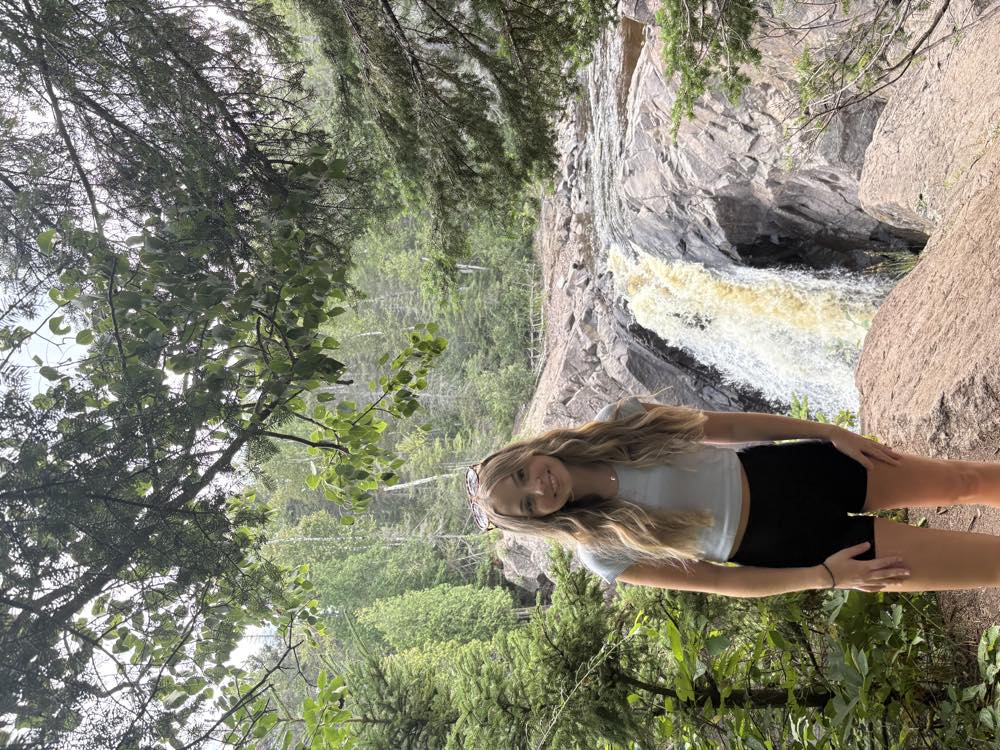

Life in Duluth
Favorite part of Duluth
My favorite thing about Duluth is how outdoorsy it is. There are hiking trails within walking distance of my house, and I feel so lucky to live in such a beautiful, well-kept area. Another huge perk is the surrounding places, the North Shore is stunning, and you can just hop in the car and end up somewhere amazing like Lutsen or Grand Marais. And of course, Lake Superior is incredible, it honestly never gets old.
Duluth highlights pictures
